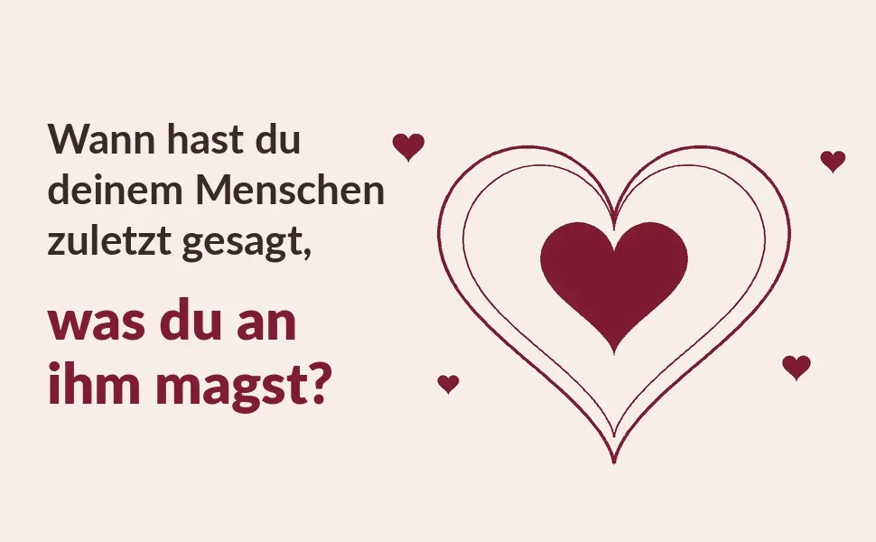
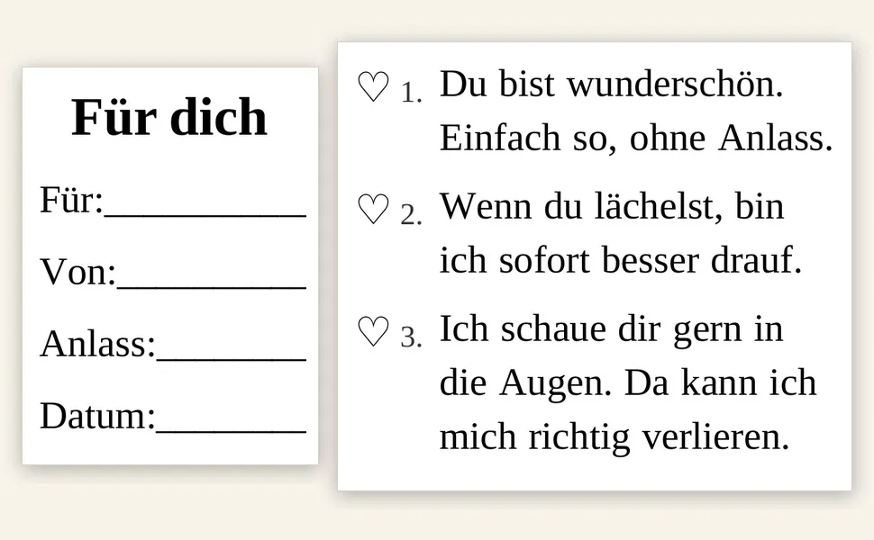
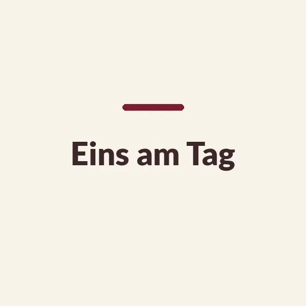
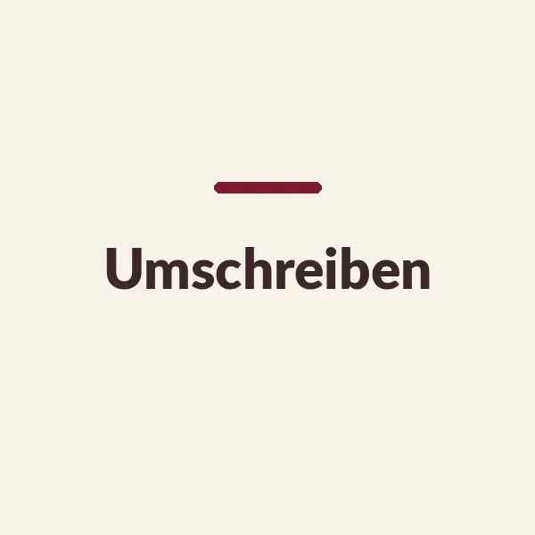

500 Komplimente für eine liebevolle Beziehung
500 Komplimente für deine Partnerin oder deinen Partner, sortiert nach zehn Themen. Aufschlagen, einen Satz aussuchen, fertig.
Öffnet amazon.de in einem neuen Tab.

Wann hast du deinem Menschen zuletzt gesagt, was du an ihm magst?
Dieses Buch ist entstanden, weil die schönsten Sätze in einer Beziehung oft die sind, die man zu selten sagt. Darin stehen 500 Komplimente für deine Partnerin oder deinen Partner. Von „Dein Lachen ist mein Lieblingsgeräusch.“ bis „Ich kann es kaum erwarten, mit dir grau zu werden.“ Du musst nichts vorbereiten: aufschlagen, einen Satz aussuchen und ihn sagen, aufschreiben oder als Nachricht schicken.

Blick ins Buch: Vorne eine Widmungsseite, neben jedem Kompliment ein Herz zum Ausmalen
Die 500 Komplimente sind auf zehn Kapitel verteilt, von Schönheit und Anziehungskraft über Vertrauen und Respekt bis zur gemeinsamen Zukunft. Jedes Kapitel beginnt mit ein paar Zeilen dazu, worum es geht. Alle Sätze sind durchnummeriert, so kannst du auch einfach schreiben: „Nummer 214. Gilt heute ganz besonders.“ Hast du ein Kompliment ausgesprochen, aufgeschrieben oder verschickt, malst du das Herz daneben aus. Mit der Zeit siehst du, welche Sätze schon angekommen sind. Auf der Widmungsseite trägst du ein, für wen das Buch ist, von wem und zu welchem Anlass.
Vier Ideen aus dem Buch, wie du die Sätze in euren Alltag bringst

Ein Kompliment am Tag
Morgens beim Kaffee, abends vor dem Einschlafen oder zwischendurch als Nachricht: Du suchst dir einen Satz aus und schenkst ihn deinem Menschen. Ganz ohne Anlass.
Zettel verstecken
Du schreibst ein Kompliment auf einen Zettel und versteckst ihn dort, wo dein Mensch ihn findet: in der Jackentasche, in der Brotdose oder am Spiegel.
Laut vorlesen
Statt den Satz zu schicken, liest du ihn vor. Gesagt wirkt ein Satz oft anders als geschrieben.

Zu deinem eigenen Satz machen
Passt ein Satz fast, schreibst du ihn um, bis er nach dir klingt. Hinten im Buch ist Platz für eure eigenen Komplimente.
Dieses Buch ist ein Ratgeber und kein Ersatz für eine Therapie oder Beratung. Wenn es dir gerade richtig schlecht geht, hol dir bitte Hilfe, zum Beispiel bei der Telefonseelsorge unter 0800 111 0 111 (kostenlos, rund um die Uhr).
Öffnet amazon.de in einem neuen Tab.